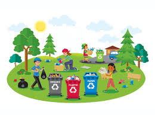

Teton Idaho Chamber of Commerce

Events
4th Of July Celebration
This year's 4th of July parade will be better than ever! Join us for all the patriotic fun!
Community Clean-Up
Join the Teton Elementary students in their annual community clean up. The clean-up starts on May 30th at 9:00 A.M. at the elementary school. See you there!
Weather
Current Conditions: Partly Cloudy
Current Temp: 30°F
Current Wind: 25 MPH
Windchill:
Teton Turf and Tree
Growing trees since 1990 and sod since 1996, Teton Turf & Tree Farms is the premier Rexburg sod grower and tree wholesaler in Southeastern Idaho.
Shogun Crafts
We are fabric store that has been serving the public for 10+ years. We offer services such as quilting quilts and hemstitching receiving blankets.
Tacos Gonzales
Family owned, Located in Teton City, right behind the post office, homemade tortillas every day!